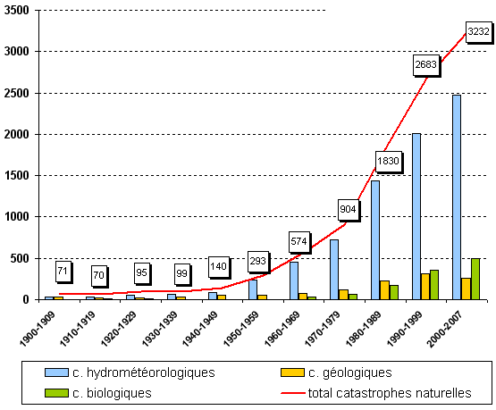

Cela fait plusieurs décennies que le monde se dégrade au fur et à mesure et personne ne se souciait de rien. Il ne nous reste pas beaucoup de temps avant de dépasser la ligne rouge, et la planète nous a déjà envoyé plusieurs signaux fort.
Chaque nation a mis à disposition ses meilleurs chercheurs afin de créé un algorithme permettant la sauvegarde de l'espèce humaine. Nous sommes un groupe de 160 chercheurs spécialisés dans tous types de domaines.
Le but du projet est simple, prendre des décisions à la place des hommes pour éviter l'effondrement de notre société. Le nom du projet est BanderSnatch en référence à un film à choix multiple où le spectateur se voit prendre des
décisions qui changent de manière radical le cours de l'histoire.
Dans la partie simulation nous vous donnons une idée sur comment sont prises les différentes décisions. Vous vous rendrez vite compte qu'on ne supprime pas le libre
arbitre de l'homme mais qu'on oriente juste les décisions pour qu'elles ne soit pas trop consommatrice en ressources.